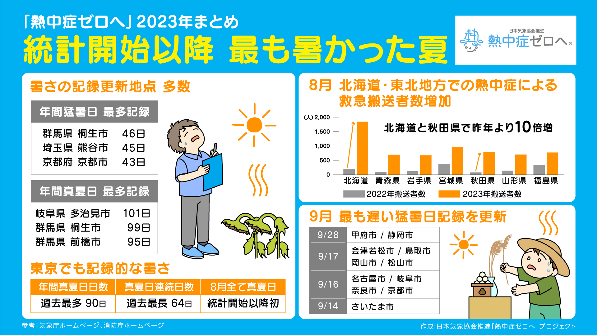

2023気になるニュース
-
全国的な暑さ、１１月頃まで続く…夏の異常気象
気象庁は、今年の夏の日本の平均温度が1898年の統計開始以降で最も高かったと発表した。
最高気温が35度以上の「猛暑日」の日数は全国38地点で最多となり、過去151年で猛暑日が
一度も無かった北海道函館市で初めて記録されるなど、異例ずくめの夏となった。

-
なぜこのニュースを気になったのか
今年の猛暑日が今までよりも長くなぜこのような異常気象が起きたのか知りたかった。
今年の夏のような猛暑が発生した主要因は、太平洋高気圧が猛烈に強まり、日本列島に張り出したことだ。
フィリピン海の海面水温の上昇や例年より北を流れる偏西風が、上空に暖かい空気をもたらした影響が大きい。
特に、フィリピン海で台風などの低気圧の活動が強まった結果、北東の太平洋高気圧が発達した。
この二つの低気圧と高気圧が影響しあう現象は「気圧のシーソー」と呼ばれる。東京大の小坂准教授は
「シーソ構造がこれほどはっきりと現れたのは珍しい」という。